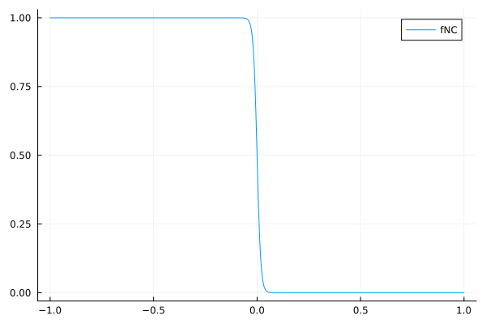
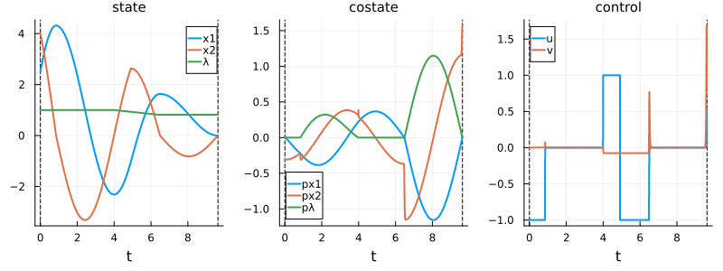
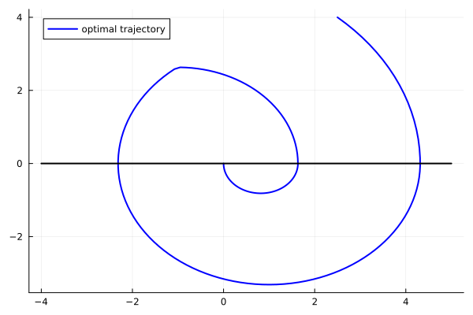
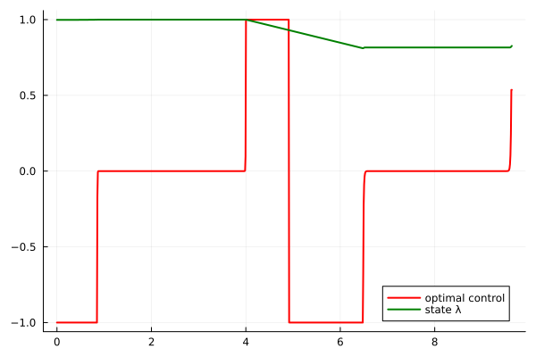
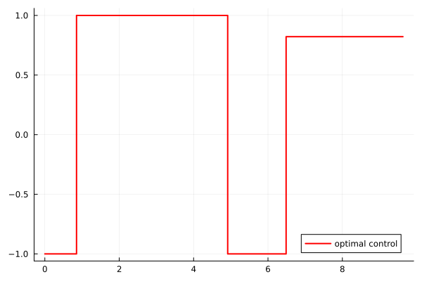
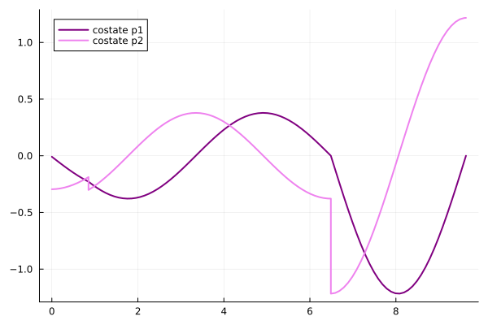
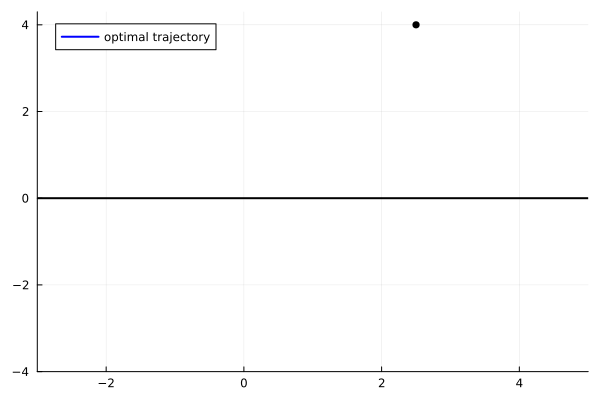
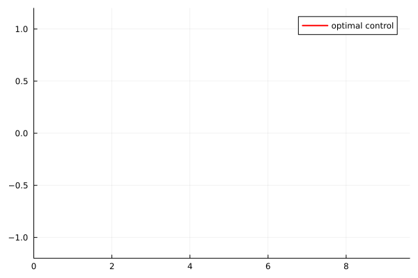
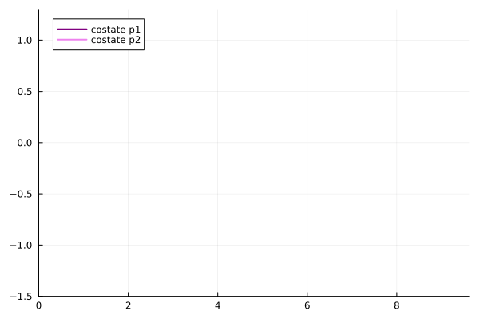

Harmonic oscillator problem
This example considers a minimum time problem for the harmonic oscillator with a loss control region. Unlike the classical harmonic oscillator problem (without loss control region), optimal trajectories spiral around the origin and are expected to visit the loss control region multiple times. At each visit, the constant control value can be modified, which is a key feature of loss control regions.
The main challenge here is that the trajectory spirals in a finite number of times before reaching the target, requiring careful handling of multiple visits to the loss control region.
Problem statement
\[ \left\{ \begin{array}{l} \displaystyle \min\, T, \\[0.5em] \dot{x}_1(t) = x_2(t), \; t\in [0,T]\\[0.5em] \dot{x}_2(t) = u(t)-x_1(t), t\in [0,T] \\[0.5em] u(t) \in [-1, 1], \; t\in [0,T]\\[0.5em] x(0) = (4.2,0) , \quad x(T) = 0_{\mathrm{R}^2}, \\[0.5em] \{x \mid x_2 < 0\} \text{ is a control loss region.} \end{array} \right.\]
The partition of $\mathbb{R}^2$ consists of:
- Control region: $X_1 = \{x \in \mathbb{R}^2 \mid x_2 > 0\}$ (where control can change at any time)
- Loss control region: $X_2 = \{x \in \mathbb{R}^2 \mid x_2 < 0\}$ (where control must remain constant)
Note that the final time $T$ is free in this problem, which can be handled using standard augmentation techniques.
Reformulation for the direct method
\[ \left\{ \begin{array}{l} \displaystyle \min\, T + \varepsilon \int_0^T v^2(t)\, \mathrm{d}t + \int_0^T f_{NC}(x_2(t))u^2(t)\, \mathrm{d}t, \\[0.5em] \dot{x}_1(t) = x_2(t), \; t\in [0,T]\\[0.5em] \dot{x}_2(t) =f_{C}(x_2(t))(u(t) - x_1(t)) + f_{NC}(x_2(t))(\lambda(t) - x_1(t)) , t\in [0,T] \\[0.5em] \dot{\lambda}(t) = f_C(x_2(t))v(t),\; t\in [0,T]\\[0.5em] u(t) \in [-1, 1] \; t\in [0,T]\\[0.5em] x(0) = (4.2,0) , \quad x(T) = 0_{\mathrm{R}^2}. \end{array} \right.\]
using Plots
using Plots.PlotMeasures
using OptimalControl
using NLPModelsIpopt
include("smooth.jl")fNC(x) = fNC_unboundedminus(x, 0, 0.018)
plot(fNC, -1, 1, label="fNC")
const ε = 1e-3
@def ocp begin
tf ∈ R, variable
t ∈ [ 0, tf ], time
q = [ x1, x2, λ ] ∈ R^3, state
ω = [u, v] ∈ R^2, control
tf ≥ 0.
x1(0) == 2.5
x2(0) == 4
x1(tf) == 0
x2(tf) == 0
-1 ≤ u(t) ≤ 1
-1 ≤ λ(t) ≤ 1, (1)
-5 ≤ x1(t) ≤ 5, (2)
-5 ≤ x2(t) ≤ 5, (3)
q̇(t) == [
x2(t),
(1-fNC(x2(t)))*u(t) + fNC(x2(t))*λ(t) - x1(t),
(1-fNC(x2(t)))*v(t),
]
tf + ∫(ε*(v(t))^2 +fNC(x2(t))*(u(t))^2) → min
endsol = (
state = t -> [0.1, 0.1, 1],
control = [-1, 0],
variable = 15,
)
for N in [50, 100, 500, 1000]
global sol = solve(ocp, :collocation, :adnlp, :ipopt;
scheme=:gauss_legendre_3,
grid_size=N,
init=sol,
tol=1e-8,
display = N == 1000,
)
end
N = 1000▫ This is OptimalControl 2.0.0, solving with: collocation → adnlp → ipopt (cpu)
📦 Configuration:
├─ Discretizer: collocation (grid_size = 1000, scheme = gauss_legendre_3)
├─ Modeler: adnlp
└─ Solver: ipopt (tol = 1.0e-8)
▫ This is Ipopt version 3.14.19, running with linear solver MUMPS 5.8.2.
Number of nonzeros in equality constraint Jacobian...: 99004
Number of nonzeros in inequality constraint Jacobian.: 0
Number of nonzeros in Lagrangian Hessian.............: 49001
Total number of variables............................: 14004
variables with only lower bounds: 1
variables with lower and upper bounds: 4003
variables with only upper bounds: 0
Total number of equality constraints.................: 12004
Total number of inequality constraints...............: 0
inequality constraints with only lower bounds: 0
inequality constraints with lower and upper bounds: 0
inequality constraints with only upper bounds: 0
iter objective inf_pr inf_du lg(mu) ||d|| lg(rg) alpha_du alpha_pr ls
0 9.6381306e+00 5.40e+00 4.98e-03 0.0 0.00e+00 - 0.00e+00 0.00e+00 0
1 9.8472489e+00 2.11e+00 1.48e+02 -5.5 5.60e+01 - 6.86e-01 1.00e+00h 1
2 9.6838795e+00 5.24e-01 2.56e+00 -6.0 3.59e+01 - 6.77e-01 1.00e+00h 1
3 9.6663094e+00 6.13e-01 1.65e+00 -2.6 3.09e+01 - 6.68e-01 1.00e+00f 1
4 9.6643851e+00 1.09e-02 4.81e-02 -7.0 1.12e+00 -4.0 8.71e-01 1.00e+00h 1
5 9.6767015e+00 1.56e-01 1.80e-02 -3.8 8.54e-01 -3.6 7.31e-01 1.00e+00h 1
6 9.7281285e+00 1.13e+01 2.61e-01 -2.5 2.05e+02 - 4.11e-02 6.73e-02f 1
7 9.7603157e+00 1.03e+01 1.61e-01 -2.5 9.39e+01 - 9.08e-02 4.64e-02h 1
8 9.7933872e+00 6.61e+00 1.21e+00 -2.5 6.90e+00 -2.3 1.00e+00 3.53e-01h 1
9 9.8884060e+00 3.84e+00 1.73e+00 -2.5 4.90e+00 -2.3 7.78e-01 8.17e-01h 1
iter objective inf_pr inf_du lg(mu) ||d|| lg(rg) alpha_du alpha_pr ls
10 9.9264483e+00 5.74e-01 7.34e-01 -2.5 2.84e+00 -1.9 4.56e-01 8.57e-01h 1
11 9.9467703e+00 2.23e-01 5.08e-01 -2.5 5.21e-01 -1.5 1.00e+00 1.00e+00h 1
12 9.9754136e+00 4.34e-01 2.74e-01 -2.5 2.33e+00 -2.0 7.02e-01 2.62e-01h 1
13 1.0027609e+01 8.45e-01 3.27e-01 -2.5 3.38e+00 -2.4 7.16e-01 3.26e-01h 1
14 1.0175342e+01 3.36e+00 9.55e-01 -2.5 8.12e+00 -2.9 5.66e-01 5.63e-01h 1
15 1.0154808e+01 2.26e-01 1.59e-01 -2.5 2.51e+00 -3.0 7.42e-01 9.94e-01h 1
16 1.0178572e+01 4.77e-01 4.49e-02 -2.5 7.70e-01 -3.0 1.00e+00 1.00e+00h 1
17 1.0175902e+01 2.09e-02 1.51e-02 -2.5 2.38e-01 -2.2 1.00e+00 1.00e+00h 1
18 1.0145645e+01 5.02e-01 8.17e-02 -3.8 4.22e-01 -2.2 7.68e-01 1.00e+00h 1
19 1.0150820e+01 4.17e-02 4.38e-01 -3.8 3.40e-01 -0.9 1.00e+00 1.00e+00h 1
iter objective inf_pr inf_du lg(mu) ||d|| lg(rg) alpha_du alpha_pr ls
20 1.0144908e+01 3.34e-02 4.14e-01 -3.8 1.73e-01 -1.4 1.00e+00 1.00e+00h 1
21 1.0086629e+01 3.68e+00 1.01e+00 -3.8 4.42e+00 -2.3 4.07e-01 1.00e+00h 1
22 1.0061336e+01 9.02e-02 9.57e-02 -3.8 3.68e+00 -2.4 7.01e-01 1.00e+00h 1
23 1.0054204e+01 5.10e-02 3.53e-02 -3.8 2.33e-01 -2.0 1.00e+00 1.00e+00h 1
24 1.0052090e+01 4.10e-03 9.82e-03 -3.8 8.72e-02 -1.5 1.00e+00 1.00e+00h 1
25 1.0045382e+01 6.85e-02 3.40e-02 -4.7 2.54e-01 -2.0 7.57e-01 1.00e+00h 1
26 1.0028896e+01 4.28e-01 1.10e-01 -4.4 7.03e-01 -2.5 8.85e-01 1.00e+00h 1
27 9.9931719e+00 4.20e+00 7.29e-01 -4.4 4.47e+00 -3.0 3.71e-01 1.00e+00h 1
28 1.0003539e+01 2.89e+00 8.82e-01 -4.4 2.42e+00 -2.1 5.68e-01 1.00e+00h 1
29 9.9940427e+00 5.82e-01 1.55e+00 -4.4 1.24e+00 -2.2 1.00e+00 8.36e-01h 1
iter objective inf_pr inf_du lg(mu) ||d|| lg(rg) alpha_du alpha_pr ls
30 9.9881443e+00 1.17e-01 9.60e-02 -4.4 1.88e-01 -1.7 1.00e+00 1.00e+00h 1
31 9.9875443e+00 8.60e-04 2.08e-02 -4.4 1.18e-01 -1.3 1.00e+00 1.00e+00h 1
32 9.9854341e+00 6.18e-03 7.24e-02 -4.9 1.48e-01 -1.8 9.98e-01 1.00e+00h 1
33 9.9629191e+00 7.08e-01 1.14e-01 -5.4 1.91e+00 -2.7 4.05e-01 1.00e+00h 1
34 9.9622806e+00 5.75e-03 8.30e-02 -5.1 7.12e-01 -1.4 1.00e+00 1.00e+00h 1
35 9.9556723e+00 8.33e-02 2.46e-01 -5.8 6.79e-01 -2.4 6.23e-01 1.00e+00h 1
36 9.9373931e+00 7.82e-01 1.59e-01 -5.5 1.69e+00 -2.4 1.00e+00 9.52e-01h 1
37 9.9327916e+00 3.11e-01 4.76e-02 -5.5 5.97e-01 -2.0 1.00e+00 6.38e-01h 1
38 9.9312065e+00 2.46e-03 1.29e-02 -5.5 2.92e-01 -1.6 1.00e+00 1.00e+00h 1
39 9.9250384e+00 4.18e-02 6.73e-02 -5.3 3.73e-01 -2.0 9.95e-01 1.00e+00h 1
iter objective inf_pr inf_du lg(mu) ||d|| lg(rg) alpha_du alpha_pr ls
40 9.9052967e+00 7.28e-01 1.84e-01 -5.4 2.67e+00 -2.5 2.05e-01 5.18e-01h 1
41 9.8990072e+00 3.62e-02 7.05e-02 -5.4 6.71e-01 -2.1 5.81e-01 1.00e+00h 1
42 9.8925151e+00 7.00e-02 4.65e-02 -5.4 2.78e+00 -2.6 3.04e-01 1.83e-01h 1
43 9.8828661e+00 1.75e-01 8.48e-02 -5.4 7.07e-01 -2.1 7.13e-01 6.57e-01h 1
44 9.8780389e+00 4.09e-02 7.38e-02 -5.4 2.44e-01 -1.7 1.00e+00 1.00e+00h 1
45 9.8680311e+00 1.63e-01 4.49e-02 -5.4 1.96e+00 -2.7 1.84e-01 3.34e-01h 1
46 9.8665539e+00 2.03e-03 3.28e-02 -5.4 1.36e-01 -1.3 1.00e+00 1.00e+00h 1
47 9.8679684e+00 4.19e-03 1.67e-02 -4.1 1.88e-01 -1.8 8.97e-01 4.96e-01h 1
48 9.8670844e+00 6.97e-04 5.13e-03 -4.3 4.50e-02 -1.4 1.00e+00 1.00e+00h 1
49 9.8626038e+00 2.28e-02 1.22e-02 -4.8 1.42e-01 -1.9 6.58e-01 1.00e+00h 1
iter objective inf_pr inf_du lg(mu) ||d|| lg(rg) alpha_du alpha_pr ls
50 9.8609110e+00 3.92e-03 3.40e-03 -4.6 5.80e-02 -1.4 1.00e+00 1.00e+00h 1
51 9.8450389e+00 3.02e-01 9.38e-02 -4.6 6.30e-01 -2.4 2.67e-01 8.96e-01h 1
52 9.8393227e+00 2.22e-01 6.00e-02 -4.7 7.46e-01 -2.5 3.41e-01 3.52e-01h 1
53 9.8357773e+00 3.44e-02 1.06e-02 -4.7 2.73e-01 -2.0 1.00e+00 8.64e-01h 1
54 9.8341976e+00 2.31e-03 2.11e-03 -4.7 8.39e-02 -1.6 1.00e+00 1.00e+00f 1
55 9.8281598e+00 4.24e-02 1.83e-02 -5.0 2.62e-01 -2.1 9.85e-01 1.00e+00h 1
56 9.8254448e+00 1.17e-02 9.06e-03 -5.1 8.88e-02 -1.6 1.00e+00 1.00e+00h 1
57 9.8129062e+00 3.04e-01 5.38e-02 -5.1 1.13e+00 -2.6 2.63e-01 5.11e-01h 1
58 9.8034772e+00 1.82e-01 4.12e-02 -5.1 1.07e+00 -2.7 9.83e-02 5.43e-01h 1
59 9.7967289e+00 1.74e-01 4.27e-02 -5.1 2.32e+00 -2.7 4.90e-01 1.52e-01h 1
iter objective inf_pr inf_du lg(mu) ||d|| lg(rg) alpha_du alpha_pr ls
60 9.7972612e+00 7.96e-03 1.16e-01 -5.1 1.27e-01 -0.5 1.00e+00 9.56e-01h 1
61 9.7961998e+00 1.51e-03 4.66e-02 -5.1 4.00e-02 -1.4 1.00e+00 1.00e+00f 1
62 9.7929297e+00 2.05e-02 3.64e-02 -5.6 4.64e-01 -2.4 5.23e-01 2.77e-01h 1
63 9.7928616e+00 5.81e-06 9.58e-03 -5.4 1.35e-02 -0.2 1.00e+00 1.00e+00h 1
64 9.7925108e+00 2.16e-04 1.49e-02 -6.9 1.18e-02 -0.6 1.00e+00 1.00e+00h 1
65 9.7908219e+00 4.83e-03 6.47e-03 -8.3 1.04e-01 -1.6 7.85e-01 5.72e-01h 1
66 9.7905983e+00 4.39e-03 5.72e-03 -6.9 7.76e-02 -1.6 1.00e+00 1.10e-01h 1
67 9.7889519e+00 5.96e-03 2.19e-03 -6.4 8.14e-02 -1.7 1.00e+00 7.97e-01h 1
68 9.7878853e+00 4.66e-03 1.65e-03 -6.7 8.07e-02 -1.7 7.97e-01 5.19e-01h 1
69 9.7837951e+00 2.74e-02 9.94e-03 -5.1 7.54e-01 -2.7 1.00e+00 3.03e-01h 1
iter objective inf_pr inf_du lg(mu) ||d|| lg(rg) alpha_du alpha_pr ls
70 9.7755267e+00 1.49e-01 5.44e-02 -5.2 1.41e+00 -2.7 1.69e-01 3.59e-01h 1
71 9.7690557e+00 2.01e-01 4.95e-02 -5.2 2.69e+00 -2.8 3.88e-01 1.22e-01h 1
72 9.7584845e+00 2.65e-01 3.89e-02 -5.2 1.90e+00 -2.8 9.04e-02 3.48e-01h 1
73 9.7512452e+00 2.62e-01 4.29e-02 -5.2 3.51e+00 -2.9 1.34e-01 1.44e-01h 1
74 9.7423748e+00 3.75e-01 5.22e-02 -5.2 2.15e+00 -2.9 2.85e-01 2.14e-01h 1
75 9.7410293e+00 5.21e-03 1.23e-02 -5.2 2.30e-01 -2.1 5.23e-01 1.00e+00h 1
76 9.7376277e+00 2.77e-02 1.28e-02 -5.7 1.90e-01 -2.1 6.36e-01 1.00e+00h 1
77 9.7286115e+00 2.98e-01 6.65e-02 -5.5 2.82e+00 -3.1 4.45e-02 2.48e-01h 1
78 9.7224467e+00 3.73e-01 7.04e-02 -5.5 5.50e+00 -3.1 2.27e-01 1.16e-01h 1
79 9.7196797e+00 1.72e-02 3.13e-02 -5.5 4.07e-01 -2.3 1.00e+00 1.00e+00h 1
iter objective inf_pr inf_du lg(mu) ||d|| lg(rg) alpha_du alpha_pr ls
80 9.7108378e+00 2.58e-01 1.63e-02 -5.5 2.52e+00 -3.3 1.02e-01 4.89e-01h 1
81 9.7077599e+00 5.95e-02 3.09e-02 -5.5 4.93e-01 -2.4 6.09e-01 9.16e-01h 1
82 9.7066115e+00 6.73e-03 1.65e-03 -5.5 1.55e-01 -2.0 1.00e+00 1.00e+00f 1
83 9.7008697e+00 1.56e-01 2.31e-02 -5.7 1.22e+00 -2.9 3.82e-01 5.38e-01h 1
84 9.6995633e+00 8.99e-03 1.28e-02 -5.7 1.94e-01 -2.1 1.00e+00 1.00e+00h 1
85 9.6989088e+00 1.71e-03 2.74e-03 -6.2 6.91e-02 -1.7 9.97e-01 1.00e+00h 1
86 9.6973852e+00 1.26e-02 3.63e-03 -6.6 5.63e-01 -2.6 2.94e-01 3.32e-01h 1
87 9.6938430e+00 7.68e-02 1.04e-02 -6.4 6.78e+00 -3.6 2.14e-02 9.63e-02h 1
88 9.6923052e+00 6.79e-02 5.33e-03 -6.4 6.64e-01 -2.7 1.00e+00 3.12e-01h 1
89 9.6906060e+00 1.95e-02 1.21e-02 -6.4 2.31e-01 -2.3 1.00e+00 1.00e+00h 1
iter objective inf_pr inf_du lg(mu) ||d|| lg(rg) alpha_du alpha_pr ls
90 9.6897634e+00 1.46e-02 5.18e-03 -6.4 2.25e-01 -2.3 1.00e+00 5.23e-01h 1
91 9.6891880e+00 2.56e-03 1.10e-03 -6.4 8.86e-02 -1.9 1.00e+00 1.00e+00f 1
92 9.6889039e+00 4.77e-04 1.21e-03 -7.9 3.67e-02 -1.5 1.00e+00 1.00e+00h 1
93 9.6882386e+00 3.39e-03 1.11e-03 -6.9 1.01e-01 -2.0 1.00e+00 9.55e-01h 1
94 9.6875511e+00 6.51e-03 1.21e-03 -11.0 7.73e-01 -2.9 5.78e-01 1.39e-01h 1
95 9.6859088e+00 2.40e-02 2.41e-03 -5.7 1.22e+01 -3.9 4.03e-01 3.68e-02h 1
96 9.6824974e+00 1.31e-01 8.70e-03 -6.2 1.86e+01 -3.9 4.00e-03 5.41e-02h 1
97 9.6817816e+00 1.18e-01 7.76e-03 -6.2 1.36e+00 -3.1 1.00e+00 1.24e-01h 1
98 9.6772757e+00 3.19e-01 2.83e-02 -6.2 4.80e+01 -4.0 1.50e-02 3.06e-02h 1
99 9.6771904e+00 8.12e-02 2.10e-02 -6.2 2.83e-01 -1.8 1.00e+00 7.47e-01h 1
iter objective inf_pr inf_du lg(mu) ||d|| lg(rg) alpha_du alpha_pr ls
100 9.6763890e+00 4.91e-02 8.01e-03 -6.2 5.20e-01 -2.7 1.00e+00 4.06e-01h 1
101 9.6756040e+00 3.48e-02 9.49e-03 -6.2 5.86e-01 -2.8 1.00e+00 3.61e-01h 1
102 9.6750605e+00 1.62e-02 6.19e-03 -6.2 2.38e-01 -2.4 1.00e+00 6.35e-01h 1
103 9.6737189e+00 2.86e-02 7.46e-03 -6.2 1.77e+00 -3.3 1.80e-01 2.13e-01h 1
104 9.6727605e+00 3.17e-02 7.31e-03 -6.2 1.89e+00 -3.4 4.68e-01 1.39e-01h 1
105 9.6694725e+00 1.61e-01 1.90e-02 -6.2 2.04e+03 -4.3 6.86e-04 7.61e-04h 1
106 9.6690168e+00 1.14e-01 1.17e-02 -6.2 3.71e-01 -2.6 1.00e+00 3.00e-01h 1
107 9.6677125e+00 1.14e-01 1.09e-02 -6.2 3.14e+00 -3.5 7.01e-01 1.20e-01h 1
108 9.6675509e+00 3.62e-04 2.19e-02 -6.2 7.04e-02 -1.3 1.00e+00 1.00e+00h 1
109 9.6672067e+00 7.97e-04 2.32e-02 -7.3 6.41e-02 -1.8 1.00e+00 1.00e+00h 1
iter objective inf_pr inf_du lg(mu) ||d|| lg(rg) alpha_du alpha_pr ls
110 9.6665953e+00 4.22e-03 1.72e-02 -8.6 5.51e-01 -2.7 8.32e-01 2.72e-01h 1
111 9.6659284e+00 6.71e-03 1.67e-02 -5.8 4.68e+00 -3.7 1.00e+00 4.79e-02h 1
112 9.6643300e+00 3.11e-02 1.68e-02 -5.8 5.79e+00 -3.7 5.37e-01 9.32e-02h 1
113 9.6618350e+00 8.71e-02 1.87e-02 -5.9 7.76e+00 -3.8 1.00e+00 1.14e-01h 1
114 9.6582339e+00 2.67e-01 2.44e-02 -5.5 1.26e+01 -3.8 1.00e+00 1.23e-01h 1
115 9.6540452e+00 5.69e-01 3.07e-02 -5.3 2.93e+01 -3.9 5.99e-01 7.02e-02h 1
116 9.6535755e+00 1.33e-01 5.06e-02 -5.7 3.73e-01 -2.1 7.67e-01 7.93e-01h 1
117 9.6482507e+00 2.81e-01 2.23e-02 -11.0 3.42e+01 - 1.82e-02 8.81e-02h 1
118 9.6481218e+00 2.47e-01 2.03e-02 -6.8 1.59e-01 -1.7 8.95e-01 1.19e-01h 1
119 9.6499501e+00 5.90e-02 2.10e-02 -5.1 4.02e-01 -2.2 1.00e+00 7.90e-01h 1
iter objective inf_pr inf_du lg(mu) ||d|| lg(rg) alpha_du alpha_pr ls
120 9.6518117e+00 1.16e-02 1.76e-02 -4.9 1.95e-01 -2.7 6.65e-01 8.99e-01h 1
121 9.6580354e+00 1.19e-01 1.03e-02 -4.6 6.71e-01 -3.1 1.00e+00 9.09e-01h 1
122 9.6559568e+00 1.12e-01 5.78e-03 -4.7 5.52e+00 - 2.90e-01 2.35e-01h 1
123 9.6549296e+00 8.76e-02 5.01e-03 -4.7 5.76e+00 - 3.27e-01 2.45e-01h 1
124 9.6542587e+00 5.19e-02 4.58e-03 -4.7 4.62e+00 - 5.16e-01 3.69e-01h 1
125 9.6539670e+00 3.26e-02 4.56e-03 -4.7 2.82e+00 - 9.52e-01 3.83e-01h 1
126 9.6538795e+00 4.88e-05 1.14e-02 -4.7 2.74e-01 -1.4 1.00e+00 1.00e+00h 1
127 9.6478632e+00 3.01e-02 3.70e-02 -5.8 2.08e-01 -2.3 9.27e-01 1.00e+00h 1
128 9.6448251e+00 4.29e-02 7.55e-03 -5.1 2.25e-01 -3.3 1.00e+00 8.29e-01h 1
129 9.6425872e+00 6.08e-03 3.92e-03 -6.2 6.36e-02 -2.0 1.00e+00 1.00e+00h 1
iter objective inf_pr inf_du lg(mu) ||d|| lg(rg) alpha_du alpha_pr ls
130 9.6421966e+00 9.57e-04 1.07e-03 -5.6 6.04e-02 -2.9 4.40e-01 8.54e-01h 1
131 9.6418568e+00 9.53e-04 1.08e-03 -5.5 6.25e+01 - 1.48e-02 1.74e-02h 1
132 9.6416206e+00 1.47e-03 1.08e-03 -5.5 6.40e+01 - 1.52e-02 1.66e-02h 1
133 9.6413689e+00 1.94e-03 1.08e-03 -5.8 4.19e+01 - 2.08e-02 2.70e-02h 1
134 9.6428811e+00 1.40e-02 1.70e-03 -5.0 4.06e+00 - 1.00e+00 2.75e-01h 1
135 9.6432924e+00 1.32e-02 2.83e-03 -5.1 1.27e+00 - 1.00e+00 8.81e-01h 1
136 9.6433770e+00 1.49e-03 1.28e-04 -5.1 4.25e-01 - 1.00e+00 1.00e+00h 1
137 9.6420268e+00 2.64e-03 5.74e-04 -6.3 1.30e+00 - 2.46e-01 2.70e-01h 1
138 9.6412823e+00 7.02e-04 2.33e-04 -5.4 1.86e-01 - 1.00e+00 1.00e+00h 1
139 9.6396404e+00 5.32e-03 9.12e-04 -5.9 1.26e+00 - 2.79e-01 6.63e-01h 1
iter objective inf_pr inf_du lg(mu) ||d|| lg(rg) alpha_du alpha_pr ls
140 9.6394746e+00 4.64e-03 7.96e-04 -6.0 5.44e+00 - 8.70e-01 1.36e-01h 1
141 9.6388805e+00 1.43e-03 8.39e-05 -5.9 1.96e-01 - 1.00e+00 1.00e+00h 1
142 9.6383794e+00 1.01e-03 7.74e-05 -6.1 1.55e-01 - 1.00e+00 1.00e+00h 1
143 9.6379314e+00 1.29e-03 6.34e-05 -6.9 2.06e-01 - 1.00e+00 1.00e+00h 1
144 9.6378534e+00 1.30e-04 6.07e-06 -7.3 1.24e-01 - 1.00e+00 1.00e+00h 1
145 9.6378274e+00 2.61e-05 2.09e-06 -7.8 7.36e-02 - 1.00e+00 1.00e+00h 1
146 9.6378173e+00 7.36e-06 8.22e-07 -8.6 4.75e-02 - 1.00e+00 1.00e+00h 1
147 9.6378165e+00 1.78e-08 6.50e-06 -9.0 3.19e-03 -2.7 1.00e+00 1.00e+00h 1
148 9.6378164e+00 1.18e-07 2.12e-02 -11.0 2.91e-01 - 8.78e-01 1.24e-01h 1
149 9.6378155e+00 1.38e-07 1.81e-06 -9.8 3.99e-02 - 1.00e+00 1.00e+00h 1
iter objective inf_pr inf_du lg(mu) ||d|| lg(rg) alpha_du alpha_pr ls
150 9.6378154e+00 6.81e-10 4.76e-10 -10.0 1.32e-03 - 1.00e+00 1.00e+00h 1
Number of Iterations....: 150
(scaled) (unscaled)
Objective...............: 9.6378154280867836e+00 9.6378154280867836e+00
Dual infeasibility......: 4.7629282739608362e-10 4.7629282739608362e-10
Constraint violation....: 6.8127661498329495e-10 6.8127661498329495e-10
Variable bound violation: 0.0000000000000000e+00 0.0000000000000000e+00
Complementarity.........: 1.1678391414045714e-10 1.1678391414045714e-10
Overall NLP error.......: 6.8127661498329495e-10 6.8127661498329495e-10
Number of objective function evaluations = 151
Number of objective gradient evaluations = 151
Number of equality constraint evaluations = 151
Number of inequality constraint evaluations = 0
Number of equality constraint Jacobian evaluations = 151
Number of inequality constraint Jacobian evaluations = 0
Number of Lagrangian Hessian evaluations = 150
Total seconds in IPOPT = 68.606
EXIT: Optimal Solution Found.plot(sol; layout=:group, size=(800, 300))
tf = variable(sol)
tt = (0:N+1) * (tf/(N+1))
x1(t) = state(sol)(t)[1]
x2(t) = state(sol)(t)[2]
λ(t) = state(sol)(t)[3]
u(t) = control(sol)(t)[1]
p1(t) = costate(sol)(t)[1]
p2(t) = costate(sol)(t)[2]
a = λ(tf)plot(x1, x2, 0, tf, label="optimal trajectory", color="blue", linewidth=2)
plot!([-4, 5], [0, 0], color=:black, label=false, linewidth=2)
plot(tt, u, label="optimal control", color="red", linewidth=2)
plot!(tt, λ, label="state λ", color="green", linewidth=2)
# Find the crossing times based on conditions for x1
t1_index = findfirst(t -> x2(t) ≤ 0, tt)
t2_index = nothing
t3_index = nothing
# If t1 is found, find the next crossing times
if t1_index !== nothing
t2_index = findfirst(t -> x2(t) ≥ 0, tt[t1_index+1:end])
t2_index = t2_index !== nothing ? t2_index + t1_index : nothing
end
if t2_index !== nothing
t3_index = findfirst(t -> x2(t) ≤ 0, tt[t2_index+1:end])
t3_index = t3_index !== nothing ? t3_index + t2_index : nothing
end
if t3_index !== nothing
t4_index = findfirst(t -> x2(t) ≥ 0, tt[t3_index+1:end])
t4_index = t4_index !== nothing ? t4_index + t3_index : nothing
end
# Convert indices to times
t1 = t1_index !== nothing ? tt[t1_index] : "No such t1 found"
t2 = t2_index !== nothing ? tt[t2_index] : "No such t2 found"
t3 = t3_index !== nothing ? tt[t3_index] : "No such t3 found"
t4 = tt[end]
println("First crossing time: ", t1)
println("Second crossing time: ", t2)
println("Third crossing time: ", t3)
println("Fourth crossing/final time: ", t4)First crossing time: 0.8564042164184208
Second crossing time: 4.002968022809697
Third crossing time: 6.495200517780158
Fourth crossing/final time: 9.632141804885833d = diff(u.(tt))
tstar = tt[findfirst(abs.(d) .> 0.9)[]]
println("the switching time: ", tstar)the switching time: 3.9933455035240972jmp1 = p2(t1+0.1) - p2(t1-0.1)
jmp2 = p2(t2+0.1) - p2(t2-0.1)
println("p2(t1+) - p2(t1-) = ", jmp1)
println("p2(t2+) - p2(t2-) = ", jmp2)p2(t1+) - p2(t1-) = -0.05503843413137449
p2(t2+) - p2(t2-) = -0.06708317585048862Analysis of the direct method results
The direct method reveals that the optimal trajectory visits the loss control region $X_2$ twice:
- First visit: $\lambda = 1$ (an extremal value of the control set $[-1,1]$)
- Second visit: $\lambda \in (-1,1)$ (an interior value)
Additionally, the control exhibits a bang-bang structure with a single switching time during the second visit to the control region. This is characteristic of time-optimal control problems.
Indirect Method
Based on the direct method results, we deduce that the optimal solution $(x^*, u^*)$ consists of:
- Three consecutive bang arcs: the control switches from $-1$ to $+1$ at the first crossing time $\tau_1^*$, then from $+1$ to $-1$ at a switching time $\sigma^* \in (\tau_2^*, \tau_3^*)$
- One constant arc: from $-1$ to a constant value in $(-1,1)$ at the crossing time $\tau_3^*$
An important observation is that an extremal value ($u_1^* = 1$) is possible when visiting a loss control region, which must satisfy the averaged Hamiltonian gradient condition (as an inequality). However, for the second visit, the interior value $u_2^* \approx 0.89$ requires an additional equation in the shooting function.
using NonlinearSolve
using OrdinaryDiffEq
using Animations# Dynamics
function F0(x)
return [x[2], -x[1]]
end
function F1(x)
return [0, 1]
end
H0(x, p) = p' * F0(x)
H1(x, p) = p' * F1(x)
# Hamiltonians:
H(x, p, u) = H0(x, p) + u*H1(x,p) # pseudo-Hamiltonian
up(x, p) = 1
um(x, p) = -1
Hp(x, p) = H(x, p, up(x, p))
Hm(x, p) = H(x, p, um(x, p))
# Hamiltonians: control loss region 2
H2(x, b, y, p) = H0(x, p) + b*H1(x, p) - y*p[2] # pseudo-Hamiltonian
Hcl(X, P) = H2(X[1:2], X[3], X[4], P[1:2]) # control loss 2
# Flows
fp = Flow(OptimalControl.Hamiltonian(Hp))
fm = Flow(OptimalControl.Hamiltonian(Hm))
fcl = Flow(OptimalControl.Hamiltonian(Hcl))# parameters
const t0 = 0
const x0 = [2.5; 4.0]# Shooting function
function shoot(p0, tt1, tt2, ttstar, tt3, b1, jump1, jump2, TT)
pb0 = 0
py0 = 0
x1, p1 = fm(t0 , x0, p0, tt1)
x2, p2 = fp(tt1, x1, p1 - [0, jump1], tt2)
x3, p3 = fp(tt2, x2, p2, ttstar)
x4, p4 = fm(ttstar, x3, p3, tt3)
X5, P5 = fcl(tt3, [x4 ; b1 ; 0], [p4 - [0, jump2]; pb0 ; py0], TT)
s = zeros(eltype(p0), 10)
s[1:2] = X5[1:2] - [ 0 , 0 ] # target
s[3] = H1(x3, p3) # switching
s[4] = x1[2] - 0 # first crossing
s[5] = x2[2] - 0 # second crossing
s[6] = x4[2] - 0 # third crossing
s[7] = jump1 - p1[2]*(1 + 1)/(1 - x1[1]) # jump1
s[8] = jump2 - p4[2]*(b1 + 1)/(b1 - x4[1]) # jump2
s[9] = Hm(x0, p0) - 1 # free final time
s[10] = P5[4] # averaged gradient condition
return s
end# auxiliary function with aggregated inputs
nle = (ξ, λ) -> shoot(ξ[1:2], ξ[3], ξ[4], ξ[5],ξ[6],ξ[7],ξ[8], ξ[9], ξ[10])
# initial guess
ξ_guess = [p1(0) , p2(0), t1, t2, tstar , t3, a, jmp1, jmp2, t4]
prob = NonlinearProblem(nle, ξ_guess)indirect_sol = solve(prob, SimpleNewtonRaphson(); abstol=1e-8, reltol=1e-8, show_trace=Val(true))# Retrieves solution
pp0 = indirect_sol[1:2]
tt1 = indirect_sol[3]
tt2 = indirect_sol[4]
ttstar = indirect_sol[5]
tt3 = indirect_sol[6]
b11 = indirect_sol[7]
jmp1 = indirect_sol[8]
jmp2 = indirect_sol[9]
T1 = indirect_sol[10]ode_sol = fm((t0, tt1), x0, pp0, saveat=0.1)
ttt1 = ode_sol.t
xx1 = [ ode_sol[1:2, j] for j in 1:size(ttt1, 1) ]
pp1 = [ ode_sol[3:4, j] for j in 1:size(ttt1, 1) ]
uu1 = um.(xx1, pp1)
ode_sol = fp((tt1, tt2), xx1[end], pp1[end] - [0, jmp1], saveat=0.1)
ttt2 = ode_sol.t
xx2 = [ ode_sol[1:2, j] for j in 1:size(ttt2, 1) ]
pp2 = [ ode_sol[3:4, j] for j in 1:size(ttt2, 1) ]
uu2 = up.(xx2, pp2)
ode_sol = fp((tt2, ttstar), xx2[end], pp2[end] , saveat=0.1)
ttt3 = ode_sol.t
xx3 = [ ode_sol[1:2, j] for j in 1:size(ttt3, 1) ]
pp3 = [ ode_sol[3:4, j] for j in 1:size(ttt3, 1) ]
uu3 = up.(xx3, pp3)
ode_sol = fm((ttstar, tt3), xx3[end], pp3[end], saveat=0.1)
ttt4 = ode_sol.t
xx4 = [ ode_sol[1:2, j] for j in 1:size(ttt4, 1) ]
pp4 = [ ode_sol[3:4, j] for j in 1:size(ttt4, 1) ]
uu4 = um.(xx4, pp4)
ode_sol = fcl((tt3, T1), [xx4[end] ; b11 ; 0], [pp4[end] - [0, jmp2]; 0 ; 0], saveat=0.1)
ttt5 = ode_sol.t
xx5 = [ ode_sol[1:2, j] for j in 1:size(ttt5, 1) ]
pp5 = [ ode_sol[5:6, j] for j in 1:size(ttt5, 1) ]
uu5 = b11.*ones(length(ttt5))tt0 = [ ttt1 ; ttt2 ; ttt3 ; ttt4 ; ttt5 ]
xx = [ xx1 ; xx2 ; xx3 ; xx4 ; xx5 ]
pp = [ pp1 ; pp2 ; pp3 ; pp4 ; pp5 ]
uu = [ uu1 ; uu2 ; uu3 ; uu4 ; uu5 ]
m = length(tt0)
x11 = [ xx[i][1] for i=1:m ]
x22 = [ xx[i][2] for i=1:m ]
p11 = [ pp[i][1] for i=1:m ]
p22 = [ pp[i][2] for i=1:m ]plot(x11, x22, label="optimal trajectory", linecolor=:blue , linewidth=2)
plot!([-4, 5], [0, 0], color=:black, label=false, linewidth=2)plot(tt0, uu, label="optimal control", linecolor=:red , linewidth=2)
plot(tt0, p11, label="costate p1", linecolor=:purple , linewidth=2)
plot!(tt0, p22, label="costate p2", linecolor=:violet , linewidth=2)
# create an animation
animx = @animate for i = 1:length(tt0)
plot(x11[1:i], x22[1:i], xlim=(-3.,5.), ylim=(-4.,4.3), label="optimal trajectory",
linecolor=:blue, linewidth=2, legend=:topleft)
scatter!([x11[i]], [x22[i]], markersize=4, marker=:circle, color=:black, label=false)
plot!([-4, 5], [0, 0], color=:black, label=false, linewidth=2)
end
animu = @animate for i = 1:length(tt0)
plot(tt0[1:i], uu[1:i], xlim=(0.,tt0[end]), ylim=(-1.2,1.2), label="optimal control",
linecolor=:red, linewidth=2)
end
animp = @animate for i = 1:length(tt0)
plot(tt0[1:i], p11[1:i], xlim=(0.,tt0[end]), ylim=(-1.3, 0.5), label="costate p1",
linecolor=:purple, linewidth=2)
plot!(tt0[1:i], p22[1:i], xlim=(0.,tt0[end]), ylim=(-1.5,1.3), label="costate p2",
linecolor=:violet, linewidth=2, legend=:topleft)
end# display the animation
gif(animx, "ho_x.gif", fps = 10)
gif(animu, "ho_u.gif", fps = 10)
gif(animp, "ho_p.gif", fps = 10)